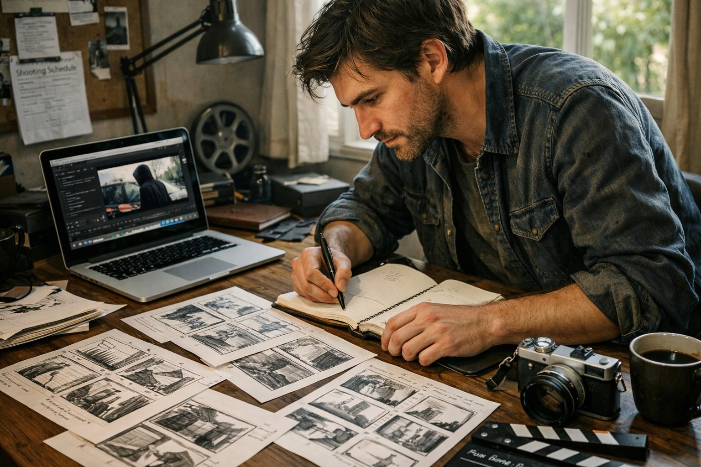
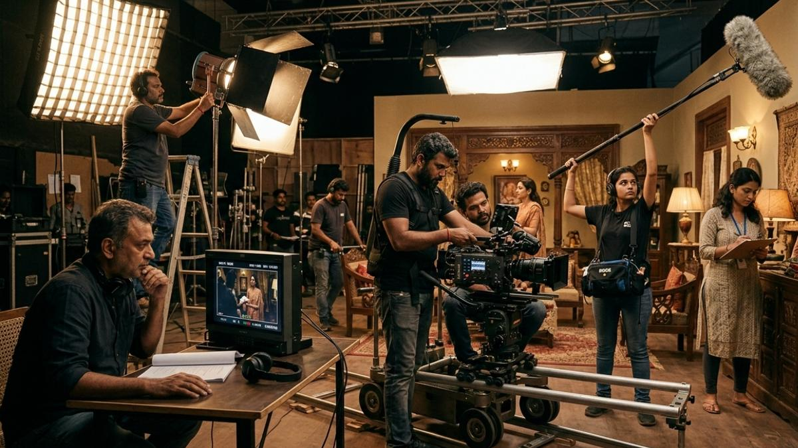

THE JOURNEY
Behind Every Film
Is a Journey
Explore the step-by-step process of making a short film.
Click on each stage to learn more.
1. Idea
Every great film starts with an idea. This is where you choose a topic, explore your interests, and think about the message you want to share with your audience.
Key Points
- Find inspiration from real life, issues, or stories.
- Think about your target audience.
- Keep your idea clear and simple.
- Discuss and get feedback from your team.

Every great film starts somewhere.
2. Script
A script turns your idea into a clear story. It outlines the scenes, dialogue, and actions that will guide the film.
Key Points
- Build the story structure.
- Write scenes and dialogue.
- Describe actions and settings.
- Review and refine the draft.

Turning ideas into a story.
3. Shooting
Shooting brings the script to life by recording scenes with actors, cameras, and sound.
Key Points
- Prepare the camera and equipment.
- Set up lighting and sound.
- Guide actors through each scene.
- Record multiple takes and review footage.
Bringing the story to life.
4. Editing
Editing brings the recorded footage together into a clear and engaging story. Choose the best takes, arrange scenes, and refine the film.
Key Points
- Organize and review all footage.
- Select the best takes.
- Arrange scenes and transitions.
- Add music, sound, and color corrections.

Shaping the final film.
5. Premiere
Premiere is the final step where you share the completed film with an audience and celebrate the work behind it.
Key Points
- Export the final film in the right format.
- Check sound, visuals, and credits.
- Prepare the screening or online release.
- Share the film and gather audience feedback.

The story reaches the audience.